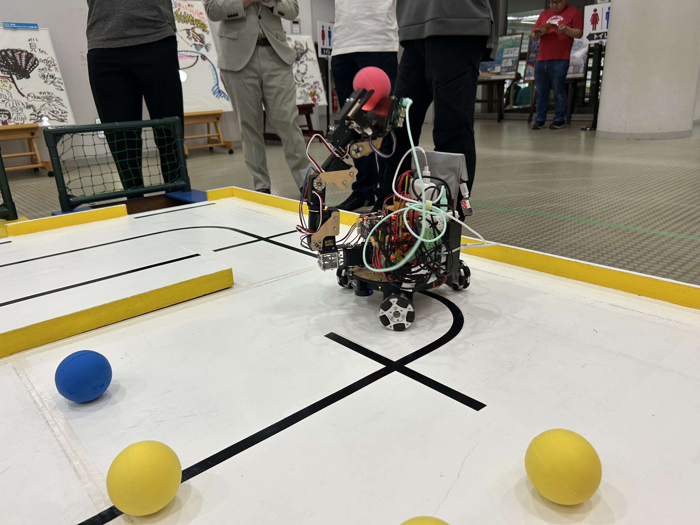
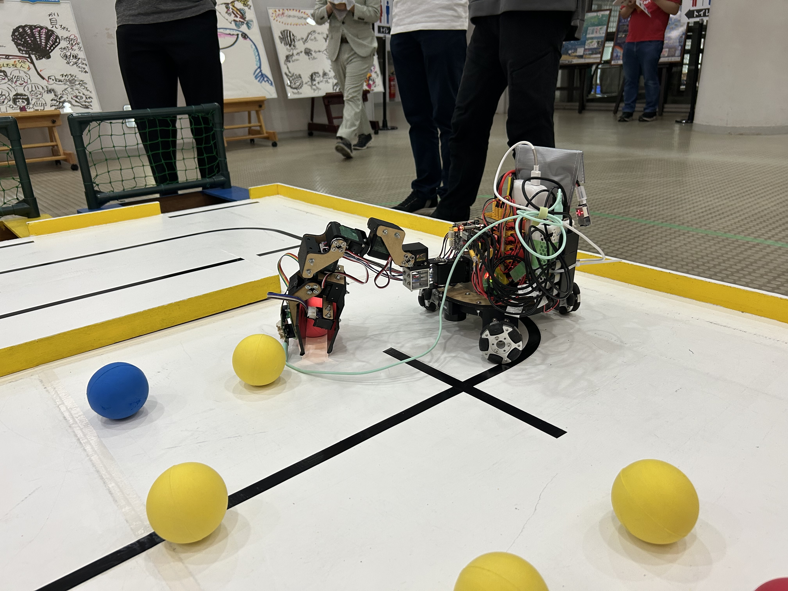
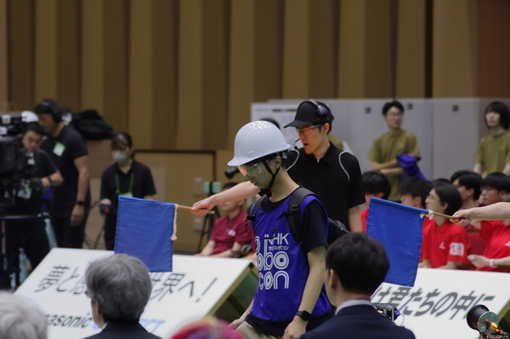

Keigo Shibata
Master's Student (M2) @ Tohoku University, Fialab

About
I'm a second-year master's student at the Graduate School of Information Sciences, Tohoku University, and a member of the Tohoku NLP Group / Fundamental Artificial Intelligence Laboratory (Fialab), advised by Prof. Jun Suzuki.
Since December 2025, I have also been working as a Research Intern at SB Intuitions.
News
Education
Tohoku University
2025 – Present
Graduate School of Information Sciences, Master's Program
Tohoku University
2023 – 2025
Faculty of Engineering (transfer admission)
National Institute of Technology, Kurume College
– 2023
Department of Control and Information Engineering
Research
Improving the pretraining of Transformer-based language models.
Experience
SB Intuitions
Dec. 2025 – Present
Research Intern
Publications
Hobbies
I am interested in autonomous robots and have competed in the following robotics contests:
- Intelligent Robot Contest (知能ロボットコンテスト): 2023, 2025, 2026
- NHK Student Robocon (NHK学生ロボコン): 2024


